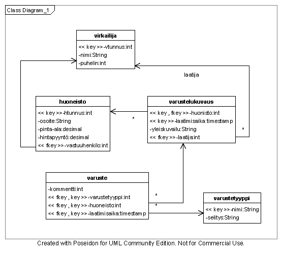

Tietokannan suunnittelu
Tiivistelmä:
- Suunnittele tietokantasi
- Luo dokumentaatioon asiaanliittyvät kaaviot ja kappaleet:
Tee sovelluksellesi alustava käsitekaavio erittelemällä tekemiltäsi sivuilta ja aihekuvauksesta kaikki tietokohteet sekä niiden väliset riippuvuudet yhdellä kaaviolla:


Kaikki tähän alustavaan käsitekaavioon tulevat asiat eivät välttämättä ole relevantteja ohjelman toteutuksen kannalta. Esimerkiksi palveluskunta ei kokonaisuutena näyttele juuri mitään roolia ohjelman toiminnassa, vaan pääosassa ovat sen jäsenet. Lopullisessa kissalistan toteutuksessa ei tämän takia ole palveluskunta-taulua. Hyvänä valintakriteerinä on se, sisältääkö tietokohde jotain omia kenttiään, vai onko se vain täysin osasistaan koostuva kokoelma.
Lähde tämän jälkeen tekemään listaa kunkin kaavion tietokohteen sisältämistä tietokentistä, niiden tyypeistä ja rooleista sovelluksessa. Liitä kenttien kuvaukset taulukkoina dokumentaatioon. Myös yhteydet toisiin kohteisiin täytyy määritellä. Lopputuloksen kuuluu näyttää tämäntapaiselta:
Tietokohde: Kissa
Attribuutti Arvojoukko Kuvailu Nimi Merkkijono, max. 80 merkkiä Kissan nimi Väri Merkkijono, max. 30 merkkiä Kuvaus kissan väristä esim. “valkotäplikäs oranssi” Kuva Kuvatiedosto, vapaaehtoinen Kuva kissasta Viim. ruokkimis-pvm. Päivämäärä Koska kissa on viimeksi ruokittu? Lisätiedot Merkkijono, max. 255 merkkiä Kuvaus kissan ominaisuuksista esim. “Serafiina syö vain kalaa.” Lainaajan nimi Merkkijono, max. 40 merkkiä, vapaaehtoinen Mahdollisen kissan lainaajan nimi Kissa, joka asuu kissatädin kartanossa. Jokainen kissa kuuluu tasan yhteen kissarotuun. Jokaisesta kissasta merkitään ylös sitä viimeksi ruokkinut palvelija.
Relaatiotietokantakaavio
Tee nyt suunnittelemastasi tietosisällöstä dokumentaatio-ohjeen mukainen relaatiotietokantakaavio: 
Muista lisätä kaavioon kaikki olennaiset viiteavaimet sekä monesta-moneen suhteiden tilalle välitaulut.
Tallenna tekemäsi kaaviot ja uusi sisältö repositoriosi dokumentaatiotiedostoon. Lisää myös kaavioiden tuottamiseen käyttämäsi lähdetiedostot repositoriosi doc-kansioon niin ne pysyvät tallessa muutosten varalta.
Linkkejä
- MySql:n dokumentaatio
- PostgreSql:n dokumentaatio
- W3Schoolsin SQL-intro
- Laineen tietokantojen perusteet -kurssin SQL materiaaleja
- Osa 1
- Osa 2
- Osa 3
Seuraavaksi:
Suunniteltuasi kaiken voit toteuttaa käyttöliittymän HTML:llä. Tai siirtyä käytännön tietokantaohjelmointiin.